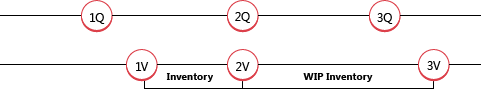

Design Details: Revaluation
You can revalue the inventory based on the valuation base that most accurately reflects the inventory value. You can also backdate a revaluation, so that the cost of goods sold (COGS) is correctly updated for items that have already been sold. Items using the Standard costing method that have not been completely invoiced can also be revalued.
In Business Central, the following flexibility is supported regarding revaluation:
- The revaluable quantity can be calculated for any date, also back in time.
- For items using Standard costing method, expected cost entries are included in revaluation.
- Inventory decreases affected by revaluation are detected.
Calculating the Revaluable Quantity
The revaluable quantity is the remaining quantity on inventory that is available for revaluation on a given date. It is calculated as the sum total of the quantities of completely invoiced item ledger entries that have a posting date equal to or earlier than the revaluation posting date.
Note
Items using the Standard costing method are treated differently when calculating the revaluable quantity per item, location, and variant. The quantities and values of item ledger entries that are not completely invoiced are included in the revaluable quantity.
After a revaluation has been posted, you can post an inventory increase or decrease with a posting date that comes before the revaluation posting date. However, this quantity will not be affected by the revaluation. To balance the inventory, only the original revaluable quantity is considered.
Because revaluation can be made on any date, you must have conventions for when an item is considered part of inventory from a financial point of view. For example, when the item is on inventory and when the item is work in process (WIP).
Example
The following example illustrates when a WIP item transitions to become part of inventory. The example is based on the production of a chain with 150 links.

1Q: The user posts the purchased links as received. The following table shows the resulting item ledger entry.
| Posting Date | Item | Entry Type | Quantity | Entry No. |
|---|---|---|---|---|
| 01-01-20 | LINK | Purchase | 150 | 1 |
Note
Now an item using the Standard costing method is available for revaluation.
1V: The user posts the purchased links as invoiced and the links become part of inventory, from a financial point of view. The following table shows the resulting value entries.
| Posting Date | Entry Type | Valuation Date | Cost Amount (Actual) | Item Ledger Entry No. | Entry No. |
|---|---|---|---|---|---|
| 01-15-20 | Direct Cost | 01-01-20 | 150.00 | 1 | 1 |
2Q + 2V: The user posts the purchased links as consumed for the production of the iron chain. From a financial point of view, the links become part of WIP inventory. The following table shows the resulting item ledger entry.
| Posting Date | Item | Entry Type | Quantity | Entry No. |
|---|---|---|---|---|
| 02-01-20 | LINK | Consumption | -150 | 1 |
The following table shows the resulting value entry.
| Posting Date | Entry Type | Valuation Date | Cost Amount (Actual) | Item Ledger Entry No. | Entry No. |
|---|---|---|---|---|---|
| 02-01-20 | Direct Cost | 02-01-20 | -150.00 | 2 | 2 |
The valuation date is set to the date of the consumption posting (02-01-20), as a regular inventory decrease.
3Q: The user posts the chain as output and finishes the production order. The following table shows the resulting item ledger entry.
| Posting Date | Item | Entry Type | Quantity | Entry No. |
|---|---|---|---|---|
| 02-15-20 | CHAIN | Output | 1 | 3 |
3V: The user runs the Adjust Cost - Item Entries batch job, which posts the chain as invoiced to indicate that all material consumption has been completely invoiced. From a financial point of view, the links are no longer part of WIP inventory when the output is completely invoiced and adjusted. The following table shows the resulting value entries.
| Posting Date | Entry Type | Valuation Date | Cost Amount (Actual) | Item Ledger Entry No. | Entry No. |
|---|---|---|---|---|---|
| 01-15-20 | Direct Cost | 01-01-20 | 150.00 | 2 | 2 |
| 02-01-20 | Direct Cost | 02-01-20 | -150.00 | 2 | 2 |
| 02-15-20 | Direct Cost | 02-15-20 | 150.00 | 3 | 3 |
Expected Cost in Revaluation
The revaluable quantity XE "Revaluable Quantity" XE "Quantity;Revaluable" is calculated as the sum of quantity XE "quantity" for completely invoiced XE "Invoice" item ledger XE "Item Ledger" entries with a posting date equal to or earlier than the revaluation XE "Revaluation" date. This means that when some items are received/shipped but not invoiced, their inventory value cannot be calculated XE "Inventory Value" . Items using the Standard costing method are not limited in this respect. XE "Value"
Note
Another type of expected cost that can be revalued is WIP inventory, within certain rules. For more information, see the “WIP Inventory Revaluation” section in this topic.
When calculating the revaluable quantity for items using the Standard costing method, item ledger entries that have not been completely invoiced are included in the calculation. These entries are then revalued when you post the revaluation. When you invoice the revalued entry, the following value entries are created:
- The usual invoiced value entry with an entry type of Direct Cost. The cost amount on this entry is the direct cost from the source line.
- A value entry with an entry type of Variance. This entry records the difference between the invoiced cost and the revalued standard cost.
- A value entry with an entry type of Revaluation. This entry records the reversal of the revaluation of the expected cost.
Example
The following example, which is based on the production of the chain in the previous example, illustrates how the three types of entries are created. It is based on the following scenario:
The user posts the purchased links as received with a unit cost of LCY 2.00.
The user then posts a revaluation of the links with a new unit cost of LCY 3.00, updating the standard cost to LCY 3.00.
The user posts the original purchase of the links as invoiced, which creates the following:
- An invoiced value entry with an entry type of Direct Cost.
- A value entry with an entry type of Revaluation to record the reversal of the revaluation of the expected cost.
- A value entry with an entry type of Variance, recording the difference between the invoiced cost and the revalued standard cost.
The following table shows the resulting value entries.
| Step | Posting Date | Entry Type | Valuation Date | Cost Amount (Expected) | Cost Amount (Actual) | Item Ledger Entry No. | Entry No. |
|---|---|---|---|---|---|---|---|
| 1. | 01-15-20 | Direct Cost | 01-15-20 | 300.00 | 0.00 | 1 | 1 |
| 2. | 01-20-20 | Revaluation | 01-20-20 | 150.00 | 0.00 | 1 | 2 |
| 3.a. | 01-15-20 | Direct Cost | 01-15-20 | -300.00 | 0.00 | 1 | 3 |
| 3.b. | 01-15-20 | Revaluation | 01-20-20 | -150.00 | 0.00 | 1 | 4 |
| 3.c. | 01-15-20 | Variance | 01-15-20 | 0.00 | 450.00 | 1 | 5 |
Determining if an Inventory Decrease Is Affected by Revaluation
The date of the posting or the revaluation is used to determine if an inventory decrease is affected by a revaluation.
The following table shows the criteria that is used for an item that does not use the Average costing method.
| Scenario | Entry No. | Timing | Affected by revaluation |
|---|---|---|---|
| A | Earlier than revaluation entry number | Earlier than revaluation posting date | No |
| B | Earlier than revaluation entry no. | Equal to revaluation posting date | No |
| C | Earlier than revaluation entry no. | Later than revaluation posting date | Yes |
| D | Later than revaluation entry no. | Earlier than revaluation posting date | Yes |
| E | Later than revaluation entry no. | Equal to revaluation posting date | Yes |
| F | Later than revaluation entry no. | Later than revaluation posting date | Yes |
Example
The following example, which illustrates revaluation of an item that uses the FIFO costing method, is based on the following scenario:
- On 01-01-20, the user posts a purchase of 6 units.
- On 02-01-20, the user posts a sale of 1 unit.
- On 03-01-20, the user posts a sale of 1 unit.
- On 04-01-20, the user posts a sale of 1 unit.
- On 03-01-20, the user calculates the inventory value for the item, and posts a revaluation of the item’s unit cost from LCY 10.00 to LCY 8.00.
- On 02-01-20, the user posts a sale of 1 unit.
- On 03-01-20, the user posts a sale of 1 unit.
- On 04-01-20, the user posts a sale of 1 unit.
- The user runs the Adjust Cost - Item Entries batch job.
The following table shows the resulting value entries.
| Scenario | Posting Date | Entry Type | Valuation Date | Valued Quantity | Cost Amount (Actual) | Item Ledger Entry No. | Entry No. |
|---|---|---|---|---|---|---|---|
| 01-01-20 | Purchase | 01-01-20 | 6 | 60.00 | 1 | 1 | |
| 03-01-20 | Revaluation | 03-01-20 | 4 | -8.00 | 1 | 5 | |
| A | 02-01-20 | Sale | 02-01-20 | -1 | -10.00 | 2 | 2 |
| B | 03-01-20 | Sale | 03-01-20 | -1 | -10.00 | 3 | 3 |
| C | 04-01-20 | Sale | 04-01-20 | -1 | -10.00 | 4 | 4 |
| 04-01-20 | Sale | 04-01-20 | -1 | 2.00 | 4 | 9 | |
| D | 02-01-20 | Sale | 03-01-20 | -1 | -10.00 | 5 | 6 |
| 02-01-20 | Sale | 03-01-20 | -1 | 2.00 | 5 | 10 | |
| E | 03-01-20 | Sale | 03-01-20 | -1 | -10.00 | 6 | 7 |
| 03-01-20 | Sale | 03-01-20 | -1 | 2.00 | 6 | 11 | |
| F | 04-01-20 | Sale | 04-01-20 | -1 | -10.00 | 7 | 8 |
| 04-01-20 | Sale | 04-01-20 | -1 | 2.00 | 7 | 12 |
WIP Inventory Revaluation
Revaluation of WIP inventory implies revaluing components that are registered as part of WIP inventory at the time of the revaluation.
With this in mind, it is important to establish conventions as to when an item is considered part of the WIP inventory from a financial point of view. In Business Central, the following conventions exist:
- A purchased component becomes part of the raw material inventory from the time of posting a purchase as invoiced.
- A purchased/subassembled component becomes part of the WIP inventory from the time of posting its consumption in connection with a production order.
- A purchased/subassembled component remains part of the WIP inventory until the time when a production order (manufactured item) is invoiced.
The way the valuation date for the value entry of consumption is set, follows the same rules as for non-WIP inventory. For more information, see the “Determining if an Inventory Decrease Is Affected by Revaluation” section in this topic.
WIP inventory can be revalued as long as the revaluation date is not later than the posting date of the corresponding item ledger entries of type Consumption and as long as the corresponding production order has not been invoiced yet.
Caution
The Inventory Valuation - WIP report shows the value of posted production order entries and may therefore be a little confusing for WIP items that have been revalued.
See Also
Design Details: Inventory Costing
Design Details: Costing Methods
Design Details: Inventory Valuation
Managing Inventory Costs
Finance
Working with Business Central